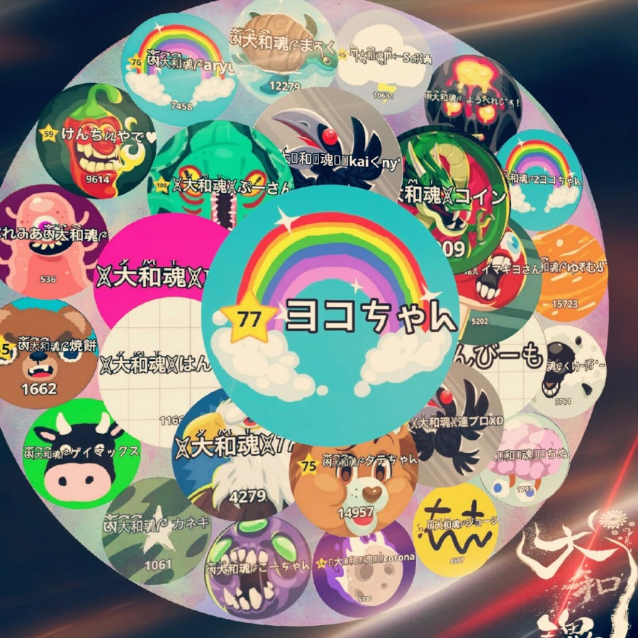
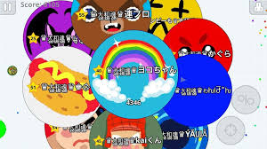

agarioの世界
細胞達の戦争
大和魂集合写真
平成２６年に設立された大和魂は２年間という
長い歴史を持ち幕を閉じた。全盛期に募集を掛けたところ
ロビーの入隊希望者数は１０００人を超える大クランである。

設立当初からのメンバー写真
２年間という長い間で変わらずに所属していたメンバーは
リーダーを長く務めた、ヨコチャン、コイン、 kai君、ぞんび
ーも、連プも写真に移っており、レベルは低めなのも良い。

お知らせ
- 2018/04/01
- 大和魂解散 ありがとうございました
- 2018/03/12
- クラン戦 春の大会 敗北
- 2018/03/01
- クラン戦 春の大会 勝利